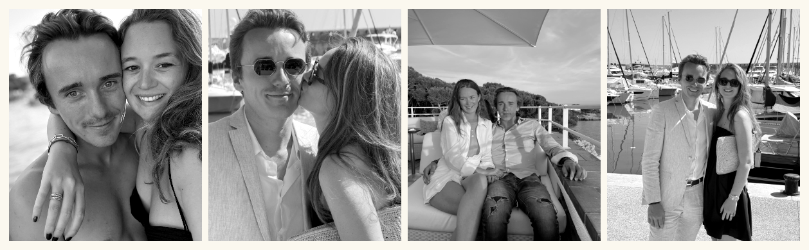
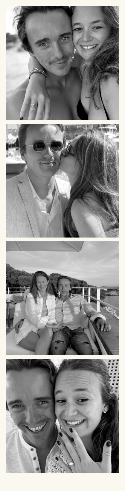
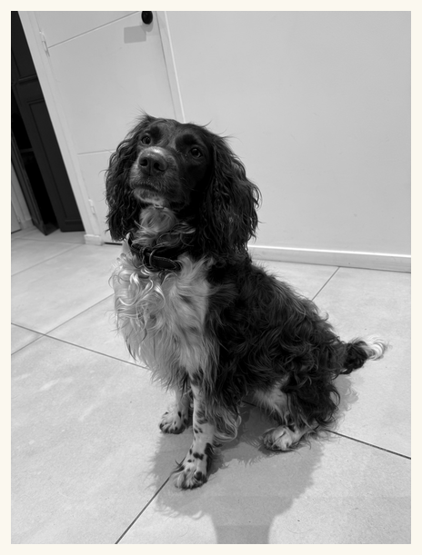
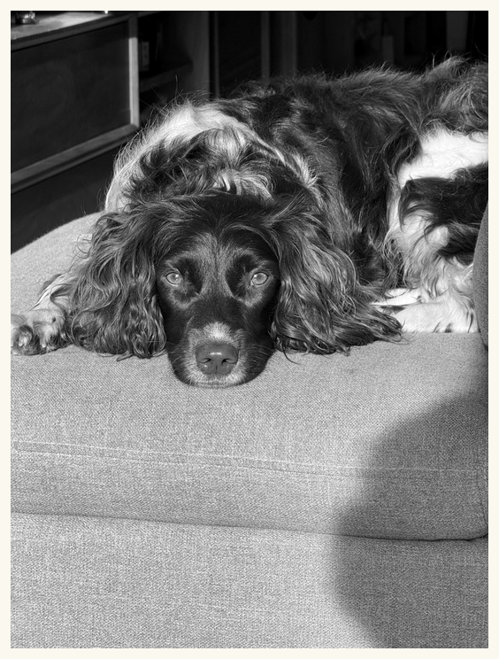
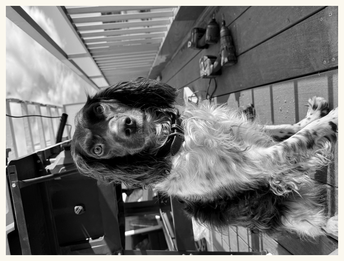
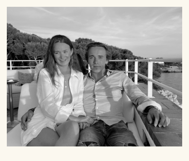
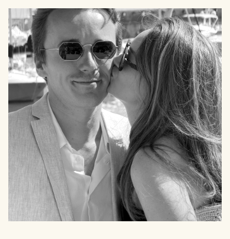
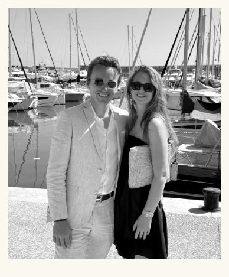

On se marie !
Marie & Antony
22 Mai 2027
Antibes — Puget-sur-Argens
Faites défiler
Notre histoire
Il était une fois…
Entre la mer et les oliviers, une évidence — et puis l'envie de la fêter avec vous.
De la Côte d'Azur à l'arrière-pays, on a appris à aimer les longues tablées, les fins de journée dorées et la compagnie de ceux qu'on aime — Volnay compris.
Le 22 mai 2027, on se dit oui à Antibes, puis on file au Château de Vaucouleurs pour une soirée à notre image : simple, lumineuse et pleine de Provence.




Volnay
Le jour J
Le programme
Notre voyage jusqu'au oui
Les lieux
Antibes & le château
Infos pratiques
Préparer votre séjour
À faire autour
La Côte d'Azur
Questions
Tout savoir
RSVP
Serez-vous des nôtres ?



Aux mariés !